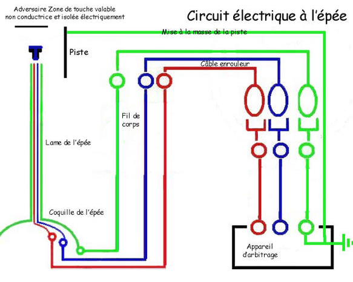
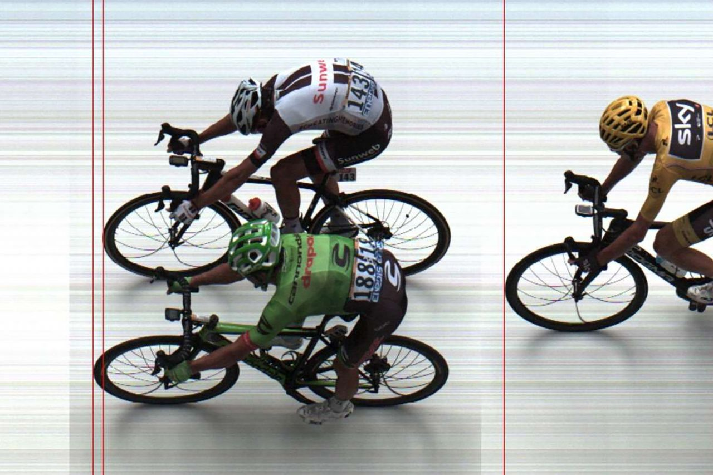
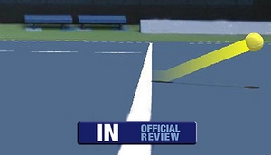
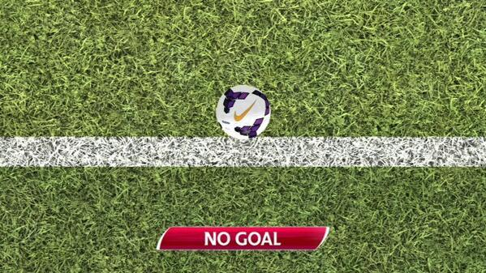

Les amateurs de football (mais pas que), le savent pertinament : l'arbitrage est un point centrale dans le sport et est souvent sujet de controverses. Le but pour les Fédérations nationales et internationales étant donc de réduire significativement ces erreurs d'arbitrage. Mais par quel bout commencer ? Sûrement par se demander d'où viennent ces erreurs. Voici donc les principales sources d'erreurs d'arbitrages connues par le grand public :
Il est assez facile de penser que les avancées technologiques telles que nous les connaissons aujourd'hui peuvent aider à résoudre un certain nombre de causes que nous avons citées plus haut. Notamment les trois premières. Dans les paragraphes suivants, nous allons voir l'évolution des outils technologiques mis en place afin d'aider l'arbitre dans ses décisions. Un grand nombre d'idées présentées ci-dessous ont été tirées de la conférence d'Arthur Lozet (ancien arbitre de football et membre de Google Paris) sur l'arbitrage de demain.
Pour comprendre ce qui est fait dans le présent et ce qui pourra être fait dans le futur, il est parfois utile de regarder ce qui s'est fait dans le passé.
L'histoire de la technologie dans l'arbitrage a commencé en 1936 dans l'escrime avec l'éléctrification des épée et des équipements. Cela a permis de régler de précision qui était au-delà des capacités humaine. En effet, entre deux touches, il peut se passer moins d'un centième de seconde. Cet ordre de grandeur est quasiment impossible à appréhender à l'oeil nu mais assez facile avec des composants éléctroniques.
Source: http://societe-escrime-lyon.over-blog.com/article-20727282.html
Cette progression a continué doucement. Ce n'est que 20 ans plus tard que la seconde révolution technologique de l'arbitrage est intervenue. Il s'agit de la photo finish. Un super appareil photo posé sur la ligne d'arrivée permettant de faire plus de 1000 photos par seconde afin de determiner le vainqueur. Elle a été mise en place pour la première fois en 1955 pour la classique cycliste de Milan San Remo.
Nous voyons donc que la technologie dans l'arbitrage était présente durant le siècle précédent. Mais c'est bien au XXIème siècle que cette technologie a explosé. Voici un certain nombre d'exemples que j'ai trouvé durant ma veille.
Mis en place dans le circuit ATP en 2005 au tournoi de Miami. Cet oeil de faucon permet de determiner si une balle de tennis est In ou Out. Il est composé d'un certain nombre de caméras qui envoient des images à un système centrale. Ce système via de la reconnaissance d'image va donner une position (X, Y, Z) à la balle dans l'espace à chaque instant. Lorsque Z=0, il y a contact avec le sol et on peut determiner si la balle est In ou Out. Il aura fallu attendre près d'une décénie pour voir cette technologie apparaître dans les sports voisins comme le badminton. La raison de ce délai étant plus économique que technologique. Au badminton, il faut traquer un volant au lieu de la balle, ce qui ne change concrétement rien à la technologie : la difficulté supplémentaire est nulle. En revanche, le tennis étant beaucoup plus médiatisé et controversé, le technologie s'imposait alors que ce n'était pas le cas dans le badminton.
Source: https://www.welovetennis.fr/atp/8041-le-hawk-eye-en-question
La technologie Hawk-Eye a évolué et a donné naissance à la Goal-Line Technology. Cette dernière permet de savoir si le ballon est entrée entièrement ou non. Sa première implémentation a eu lieu en 2014 pour la coupe du monde au Brésil. La question qui se pose est pourquoi a-t-il fallu attendre 10 ans alors que le football est plus médiatisé que le tennis ? La réponse cette fois-ci est technologique. Le problème avec la Goal-Line Technology c'est que les images du ballon sont obstruées par des obstacles (les poteaux, les joueurs) et qu'il fallait des algorithmes de reconnaissance plus robustes et des caméras de meilleure qualité. Cela était d'ailleurs tellement peu précis dans un premier temps qu'une solution magnétique était envisagée. Avec des bobines sous la pelouse et le ballon aimanté. L'article de futura-sciences le décrivant est ici. Néanmoins, avec la monté des IA. C'est la solution de traitement d'images qui a été retenue. Cerise sur le gateau, avec l'avénement de l'IOT, les décisions de l'IA sont directement données à l'arbitre sur sa montre connectée et donc la décision est prise en temps réel.
La question qui se pose alors, c'est de savoir quelle direction va prendre l'arbitrage dans le futur. Toujours plus de technologie ou garder l'humain maître ? Pour Arthur Lozet, l'arbitre du futur doit être un mélange de Warren Buffet et Zlatan Ibrahimovc. Soit quelqu'un capable de prendre des décisions qui peuvent avoir de grandes conséquences et avec une grande condition physique. Selon lui, la partie prise de décision pourra très nettement être encore améliorée par des technologies vues précédemment (VAR, Goal Line, ...). Le but sera de de pouvoir présenter un tableau de bord à l'arbitre pour qu'il puisse prendre les bonnes décisions au bons moments. On se rapproche du but ultime d'avoir arbitre omniscient. La partie physique reste elle plus floue pour le futur. Néanmoins, quelques pistes sont données par les technologies actuelles comme les jetpacks et les segways. Il s'agit de technologies non encombrantes permettant un déplacement plus rapide. On peut donc tout à fait imaginer un arbitre se déplaçant sur un terrain avec des technologies similaires. Peut-être volera t-il au-dessus du terrain, renforçant ainsi le caractère omniscient, sans gêner les joueurs lors de son déplacement que l'on peut alors imaginer très rapide. Le futur nous le dira...